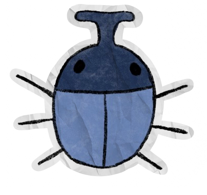
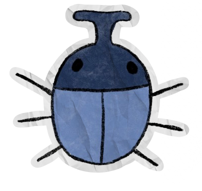

ISABELLA TIGER MOTH
Also called Woolly Bears in their larval state, Isabella Tiger Moths can be found in meadows all across WNC, along with other locations such as Southern Canada and Mexico. Their diet mainly consists of garden plants like honeysuckle, sunflowers and echinacea, better known as coneflowers. As of 2024, they are not at risk of endangerment, meaning they are least concern.
FUN FACT: In their larval state,
they can withstand being frozen for short periods of time